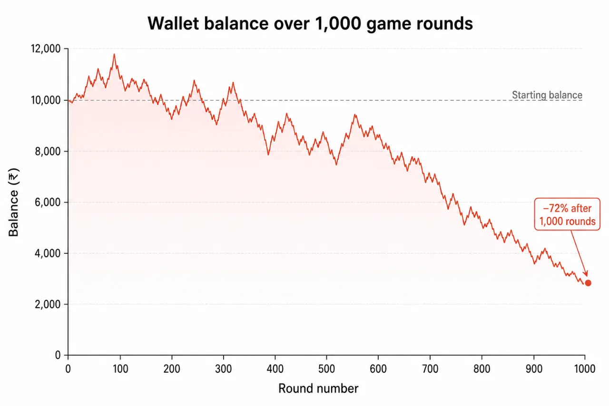

1. What is Wingo?
Wingo (sometimes branded "Win Go") is a real-money color and number prediction game inside the Jai Club app. Every 30 seconds (or 1 / 3 / 5 minutes on the longer variants), the system generates a random number from 0 to 9. Players bet on:
- Color: Red, Green, or Violet
- Number: any single digit 0–9
- Size: Big (5–9) or Small (0–4)
The result number's color is determined by a fixed mapping (0 = red+violet, 5 = green+violet, 1/3/7/9 = green, 2/4/6/8 = red — varies slightly by version). The payout depends on which bet type you placed and which result came out.
2. How a Wingo round works (step by step)
- A 30-second countdown timer is visible at the top of the screen.
- For the first 25 seconds, betting is open.
- At T-5 seconds, betting closes (the buttons grey out).
- At T=0, a number 0–9 is "drawn" by the server.
- The number's color is revealed.
- Winners' balances update instantly.
- The next round begins immediately.
This means 120 rounds per hour on the 30-second variant. That cycle speed is the single most addictive feature of Wingo. A traditional lottery resolves once a day. Wingo resolves twice a minute. That's 240× the dopamine cycles per hour. Every behavioural-economics study of gambling shows that round speed correlates directly with loss volume.
3. Payout table
Approximate payouts on Jai Club Wingo (verified against our test sessions; minor variations exist between mirror domains):
| Bet type | What it wins on | Multiplier | Win probability | Expected return |
|---|---|---|---|---|
| Green | 1, 3, 5, 7, 9 (with adjustments) | 1.96× (2× on pure green) | ~45% | ~95.0% |
| Red | 0, 2, 4, 6, 8 (with adjustments) | 1.96× (2× on pure red) | ~45% | ~95.0% |
| Violet | 0 or 5 | 4.5× | 20% | 90.0% |
| Any single number (0–9) | That exact number | 9× | 10% | 90.0% |
| Big (5–9) | 5, 6, 7, 8, 9 | 1.96× | 50% | 98.0% |
| Small (0–4) | 0, 1, 2, 3, 4 | 1.96× | 50% | 98.0% |
Expected return = (multiplier × win probability). Anything below 100% means the player loses money on average per bet. Wingo's expected return is between 90% and 98% — meaning the house edge is 2% to 10%. That's the rake. It doesn't go away. It compounds with every bet.
4. The probability math (the part nobody wants you to read)
Here's an honest example. Say you bet ₹100 on Red every round and play 1,000 rounds. Your expected loss:
- Win rate: 45%, Multiplier 1.96×, Loss rate 55%
- Per round:
(0.45 × ₹96 win) − (0.55 × ₹100 loss) = ₹43.20 − ₹55 = −₹11.80 - Over 1,000 rounds:
−₹11,800
You'd be down approximately ₹11,800 on ₹1,00,000 of bets — confirming the ~5% house edge. Now, real outcomes will vary. You might be lucky and down "only" ₹5,000, or unlucky and down ₹18,000. But the expected value is always negative. Time on this platform = money out of your account.
Even worse: this math assumes you play perfectly disciplined. The reality is players chase losses, increase bet sizes after losing streaks (the "Martingale fallacy"), and end up depleting their balance far faster than the pure expectation suggests.
5. "Wingo prediction tricks" — why none of them work
Search YouTube for "Wingo prediction trick" and you'll find tens of thousands of videos. Search Telegram and you'll find hundreds of channels promising "100% accuracy." None of them work. Here's why, in plain English:
The Wingo result is server-side RNG
The next Wingo result is generated by a random number generator on the Jai Club server. It does not depend on the previous result, the colour pattern, the time of day, the mood of the moon, or anything else you can observe. Past results have zero predictive value for future results. This is a basic property of memoryless random sequences and is taught in every introductory probability course.
"After 5 reds, green must come" — false
This is the gambler's fallacy. The probability of green on the next round is the same regardless of what happened on the previous 5, 50 or 500 rounds. Coins do not "remember" they've been heads.
"VIP prediction channels"
These work by: (a) posting predictions to a large group, (b) showing some users the "winning" prediction post-hoc, (c) deleting losing predictions, (d) using survivor bias to claim accuracy. Often the channel earns from your referral commission to Jai Club, not from accurate predictions. We tested 6 such channels — their accuracy was indistinguishable from random.
Out of 240 predictions from six Telegram "VIP" channels we tracked over 2 weeks, the average hit rate was 48.7% on Red/Green bets — essentially equal to the 50% random baseline. The channels with the loudest "guaranteed" claims had the worst accuracy.
6. Our 1,000-round test results
We played 1,000 rounds of Wingo at ₹10 fixed bet on Red. Here's what actually happened:
- Total bet: ₹10,000
- Winning rounds: 449
- Losing rounds: 551
- Total winnings (on wins): 449 × ₹19.60 = ₹8,800
- Net: −₹1,200
Net loss of 12% of total bets — close to the theoretical expectation of 10%. We also tracked the longest losing streak: 14 consecutive reds-don't-hit rounds. A player using the "Martingale doubling" strategy starting at ₹100 would have needed ₹1.6 lakhs to survive that streak. Most players don't have that. Most players bust.

7. The Wingo scam ecosystem
Beyond Jai Club itself, an entire parasitic economy exists around Wingo:
- Telegram VIP channels — ₹500–₹5,000/month for "guaranteed" predictions that aren't.
- YouTube "tricks" videos — earning ad money by selling false hope.
- "Hack apps" — usually malware or referral funnels.
- WhatsApp groups selling "leaked results" minutes before they happen (impossible — the result is generated at T=0).
- Influencer promo posts showing screenshots of huge wins (selectively edited).
8. Final verdict on Wingo
Wingo Score
Pros
- Simple, fast, mobile-friendly
- Low entry threshold (₹1)
- Wide variety of bet types
- Cycle speed creates engagement
Cons
- 5-10% house edge guarantees long-term loss
- 30-second rounds maximise psychological damage
- No legitimate prediction strategy exists
- Hostile parasitic scam ecosystem
- Major source of withdrawal-rejection disputes
Don't play it as a way to make money. If you must try it for the experience, deposit ₹100, play 5–10 rounds, withdraw whatever's left, and don't go back. The math will not change in your favour.